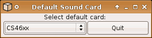

asoundconf
Archivierte Anleitung
Dieser Artikel wurde archiviert, da er - oder Teile daraus - nur noch unter einer älteren Ubuntu-Version nutzbar ist. Diese Anleitung wird vom Wiki-Team weder auf Richtigkeit überprüft noch anderweitig gepflegt. Zusätzlich wurde der Artikel für weitere Änderungen gesperrt.
Zum Verständnis dieses Artikels sind folgende Seiten hilfreich:
asoundconf ist ein Werkzeug zur automatischen Konfiguration der Benutzereinstellungen für die ALSA-Bibliothek. Das Kommandozeilenprogramm dient dazu, die Standard-Soundkarte festzulegen oder im laufenden Betrieb zu wechseln. Dabei werden für Soundkarten, die kein Hardware-Mixing unterstützen, die virtuellen Geräte erstellt, die dann über den Mixer des jeweiligen Desktop oder den Alsamixer bedient werden können.
Die manuelle Konfiguration ist aufwendiger, aber bietet dem erfahrenen Nutzer mehr Möglichkeiten virtuelle Geräte zu definieren. Dieser Weg ist in einem eigenen Artikel zur .asoundrc beschrieben.
Mit dem grafischen Werkzeug asoundconf-gtk kann bisher nur die Standard-Soundkarte festgelegt bzw. gewechselt werden, was auch über die Mixer-Einstellungen der Desktopumgebungen GNOME, KDE und Xfce möglich ist.
Unter Verwendung von PulseAudio wird das Programm nicht benötigt, da dabei andere Werkzeuge zum Einsatz kommen.
Installation¶
Seit inklusive Karmic Koala ist asoundconf nicht mehr im Paket alsa-utils enthalten; siehe hier und hier. Eine Lösung gibt es in diesem Thread; das sollte für alle Versionen ab Karmic funktionieren:
Hinweis!
Fremdsoftware kann das System gefährden.
Das Python-Skript  wird zunächst heruntergeladen und mit Ausführungsrechten versehen[1], nach /usr/local/bin/asoundconf verschoben. Im Terminal geschieht dies mit folgenden Befehlen[2]:
wird zunächst heruntergeladen und mit Ausführungsrechten versehen[1], nach /usr/local/bin/asoundconf verschoben. Im Terminal geschieht dies mit folgenden Befehlen[2]:
sudo wget http://launchpadlibrarian.net/47786452/asoundconf -O /usr/local/bin/asoundconf sudo chmod 0755 /usr/local/bin/asoundconf
Für das optionale grafische Werkzeug zum Festlegen und Wechseln der Soundkarte wird folgendes Paket[3] benötigt:
asoundconf-gtk (universe)
 mit apturl
mit apturl
Paketliste zum Kopieren:
sudo apt-get install asoundconf-gtk
sudo aptitude install asoundconf-gtk
Bedienung¶
GTK-Oberfläche¶
Die in Python geschriebene GTK-Oberfläche asoundconf-gtk kann über einen Menüeintrag aufgerufen werden[4]:

"System -> Einstellungen -> Default Soundcard" im GNOME-Menü oder
"Application -> Einstellungen -> Default Soundcard" im Xfce-Menü.
In dem kleinen Fenster kann die Standard-Soundkarte gewählt werden. Die Funktionsweise unterscheidet sich nicht von der Konsolenbenutzung.
Konsole¶
Zuerst fragt man die von ALSA erkannte/n Soundkarte/n ab[2]:
asoundconf list
Die Ausgabe sieht beispielsweise wie folgt aus:
asoundconf list Names of available sound cards: NVidia Bt878 U0x4710x311 U0xd8c0x0c
In diesem Beispiel wurde eine Soundkarte erkannt, deren Soundchip die ID NVidia hat.
Die erkannte Soundkarte kann nun als Standard festgelegt werden, dabei erfolgt automatisch die Initialisierung der virtuellen Geräte zur Sound-Ein- und -Ausgabe und zum mischen mehrer Soundquellen.
asoundconf set-default-card NVidia
Die Soundchip-ID NVidia ist natürlich durch die eigene zu ersetzen. Verfügt man über mehrere Soundkarten, kann die Standard-Soundkarte mit diesem Befehl auch im laufenden Betrieb gewechselt werden.
Experten-Info:
Mit asoundconf können weitere ALSA-Parameter festgelegt werden, siehe dazu auch die Manpage zu asoundconf.
Funktionsweise¶
asoundconf erstellt im Homeverzeichnis des Benuzters die Datei .asoundrc.asoundconf, in der die virtuellen Geräte definiert sind und trägt in der .asoundrc eine Weiterleitung zur .asoundrc.asoundconf ein.
Achtung!
Die .asoundrc.asoundconf sollte niemals manuell bearbeitet werden, da dies zu Inkonsistenzen im Soundsystem führen kann. Zur manuellen Konfiguration ist die .asoundrc gedacht, in der nur die Weiterleitung zur .asoundrc.asoundconf auskommentiert werden muss.
Problemlösung¶
Grundeinstellung wiederherstellen¶
Falls die Parameter der Grundeinstellung verstellt wurden, so können diese - nachdem die "default-card" gesetzt wurde - mit diesem Befehl [3] wiederhergestellt werden:
asoundconf reset-default-card
Wechsel von der manuellen Konfiguration¶
Wurde zuerst eine manuelle Konfiguration mittels .asoundrc vorgenommen, und soll sie durch eine automatische Konfiguration ersetzt werden, genügt es die manuelle Konfiguration (falls gewünscht) zu sichern und eine inhaltsleere .asoundrc zu erstellen. Nun kann die automatische Konfiguration mittels der oben beschriebenen Wege vorgenommen werden. Nicht vergessen: die Grundeinstellung muss wiederhergestellt werden.
Links¶
Soundkarten-Inhaltsverzeichnis dieses Wikis
Soundsystem - Einführung in das Linux Soundsystem
.asoundrc - Manuelle ALSA-Konfiguration
ALSA - Wikipedia über die Advanced Linux Sound Architecture
ALSA-Projekt
 - Die ALSA-Projektseite bei Sourceforge
- Die ALSA-Projektseite bei Sourceforge
- Erstellt mit Inyoka
-
 2004 – 2017 ubuntuusers.de • Einige Rechte vorbehalten
2004 – 2017 ubuntuusers.de • Einige Rechte vorbehalten
Lizenz • Kontakt • Datenschutz • Impressum • Serverstatus -
Serverhousing gespendet von